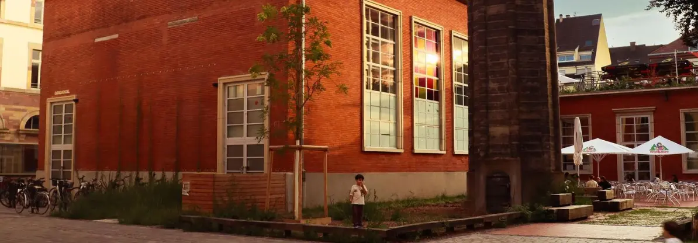
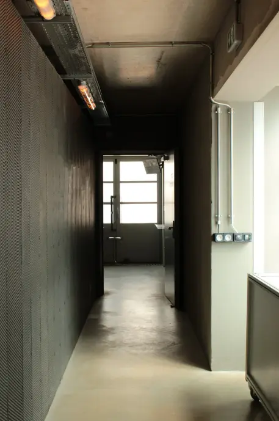
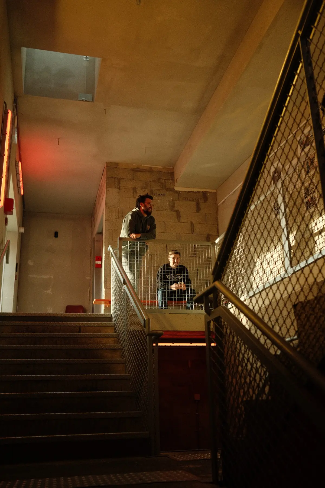
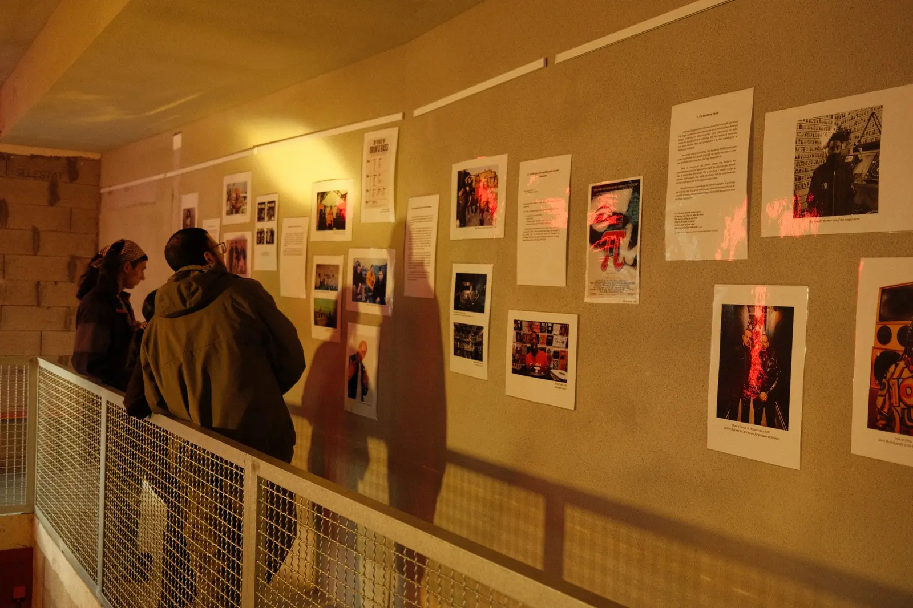
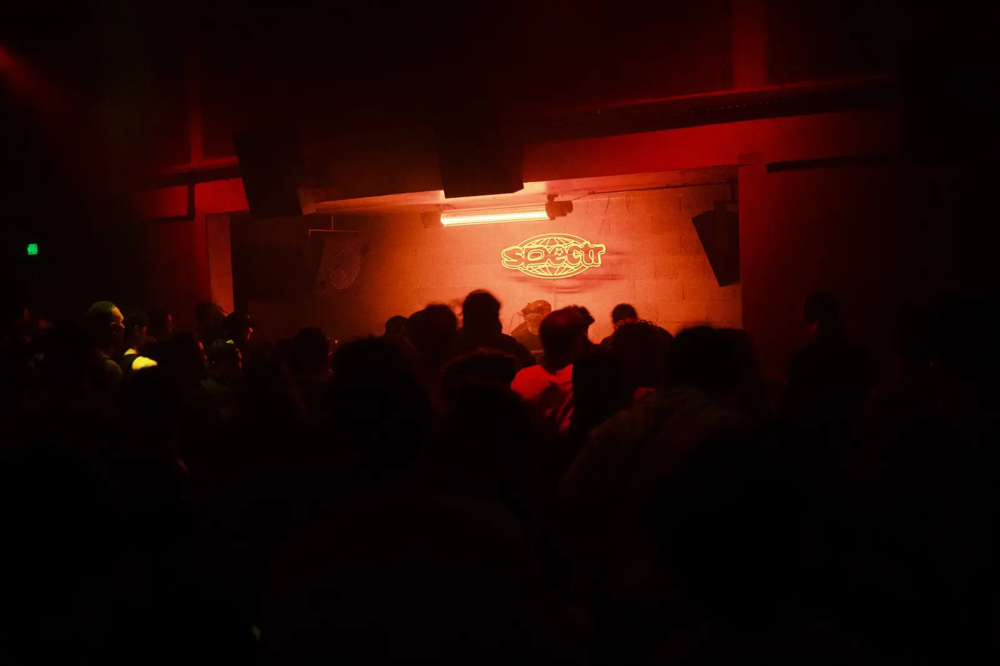

Une histoire point-and-click par Spectr
La quête
du Karmen
Trouve l’entrée, passe le physio, prépare ton sac et choisis ton chemin. Tu arriveras au son… mais pas forcément à l’heure.
01 Crée ta vibe
02 Entre au Karmen
03 Écris ta nuit
3 à 4 minutes · Plusieurs chemins · Tous les chemins mènent au son
Prologue
Choisis ton look
Les 10 personnages animés du crew sont réunis ici. Aucun genre imposé : choisis simplement ta vibe et regarde sa deuxième pose.

Dehors · 20:31 · Où est l’entrée ?

Entrée · 20:36 · Face au physio

L’escalier · 21:03 · Trois directions

Un détour

Système son · Enfin
Histoire terminée
Ton profil :
Ton profil :
Passe-partout du Karmen
Public réuni0 / 500
Retard0 min
Culture0 pts
Objets0 / 2
Envoi du résultat au classement Spectr…